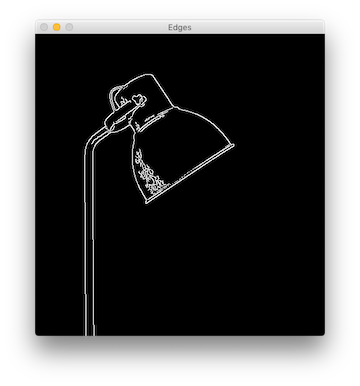

Getting user input with OpenCV trackbars
Posted on Tue 16 October 2018 in OpenCV
Trackbars, or sliders, are a simple way to get user input when working with OpenCV. In this post, I’ll show you how to add trackbars to an OpenCV window, read their values, and use those values in your Python scripts.

To demonstrate a use for trackbars, we’ll read user input from a pair of trackbars and use that input to tune edge detection parameters in real time. I’ll show you both the common way of reading trackbar values, and a more performant way to structure your code.
Adding trackbars
In order to use trackbars, you have to use a named OpenCV window. We use that name to specify which window to attach the trackbar to.
# first, create your named window
cv2.namedWindow('Window_Name')
# next, create the trackbar
cv2.createTrackbar('Trackbar_label', 'Window_Name', start_value, max_value, callback)
# finally, show something in the window, the trackbar will be attached
cv2.imshow('Window_Name', image)
Let’s take a quick look at the parameters we pass to createTrackbar. The first param is a label that will be shown next to the trackbar. Next is the window name as discussed above. The minimum trackbar value is always 0, thus the third param is setting the starting value. Next comes the max value to which the trackbar can be set. Finally, we pass a reference to a function that will be called each time the trackbar’s value changes.
Edge detection
Edge detection is the process of identifying edges in an image. Edge detection is useful for feature detection and feature extraction, as well as other applications. OpenCV supports a few edge detection algorithms; we’ll be using the Canny edge detection method. In essence, this algorithm looks for a quick change from light to dark pixels (or vice versa) extending across some minimum area in an image to be considered an edge.
A picture is worth a thousand words...
Compare this image to the one at the top of the post. You can see that the edges (white lines) have been drawn in the areas where the itensity changed from light to dark, or dark to light, mostly marking the edges of the lamp.
Canny edge detection is a multi-step process. The image is blurred slightly, a Sobel filter is applied to find and emphasize strong gradients in the image. Then finally, a process of finding edges and filtering out false edges is performed. The Canny algorithm accepts three parameters to tune its operations. These are a minimum and maximum threshold and the aperture size.
The aperture size is used in the Sobel filter, and in my experience seems to have the least effect on Canny results. The min and max threshold values, on the other hand, strongly affect the outcome. Tuning them just right will result in edges being detected; getting them wrong will result in unimportant gradient areas being identified as “edges.”
Tuning with trackbars
With that explanation out of the way, let's get down to code. We’ll use a pair of trackbars to let the user set the values of the min and max thresholds in the Canny edge detection algorithm. You can grab the image I used from Unsplash.
Let's start with the shell of our script:
1 2 3 4 5 6 7 8 9 10 11 12 13 14 15 16 17 18 19 20 | import argparse
import cv2
import imutils
def main():
min_val = 200
max_val = 300
aperture_size = 3
ap = argparse.ArgumentParser()
ap.add_argument('-i', '--image', default='',
help='Image to use for edge detection')
args = vars(ap.parse_args())
file_name = args['image']
image = cv2.imread(file_name)
image = imutils.resize(image, height=480)
gray = cv2.cvtColor(image, cv2.COLOR_BGR2GRAY)
if __name__ == '__main__':
main()
|
In the script above, we import our required libraries and begin to build out our main() function. We'll be accepting the name of the image as a command line argument. So, we instantiate the ArgumentParser and specify our one argument.
I'm resizing the image in my demo here, but keep in mind that doing so will reduce the effectiveness of edge detection. In a production app, you will probably want to work with full-size images. Finally, edge detection works best on a grayscale image, so I convert it with cvtColor.
Next, let's add the code to create our named window and trackbars. We'll attach these to the window showing the original version of the image.
18 19 20 21 | cv2.namedWindow('Original')
cv2.createTrackbar('Min', 'Original', 0, 800, no_op)
cv2.createTrackbar('Max', 'Original', 100, 800, no_op)
cv2.imshow('Original', image)
|
We're not going to use the callback function, which is called when the user moves the trackbar. For that parameter, we'll pass a no_op function, which we'll add in a minute. First, let's add a loop where we will check for user input.
22 23 24 25 26 27 28 29 30 31 | while True:
min_val = int(cv2.getTrackbarPos('Min', 'Original'))
max_val = int(cv2.getTrackbarPos('Max', 'Original'))
print('Min: {}'.format(min_val))
print('Max: {}'.format(max_val))
edges = cv2.Canny(gray, min_val, max_val, aperture_size)
cv2.imshow('Edges', imutils.resize(edges, height=480))
if cv2.waitKey(1) & 0xFF == ord("q"):
cv2.destroyAllWindows()
exit()
|
There are a few things going on in that loop! First, we use getTrackbarPos to get the trackbar position. This function takes two parameters: the label of the trackbar we're reading from and the name of the window it's attached to. For our example script, we need the value as an integer, so we convert it with int().
Here's also where we perform the edge detection. We call the cv2.Canny method passing in the image, min and max values, and the aperture size. This returns the edge-detected version which we show in a new cv2 window.
Let's not forget our no_op function to finish this off:
45 46 | def no_op(new_val):
pass
|
You can grab the entire script from this Gist.
A better trackbar
So, that script works. But, when you run it, you'll notice a couple of problems. The print statements spam your console. That loop is running continuously so that it can read user input. Even with that, the trackbars are somewhat unresponsive. You can't slide them too quickly and the script is slow to reflect your changes.
We can fix those problems by using the callback functions we ignored earlier. The downside to this approach is that you can't control what arguments are passed to the callback; just the new trackbar value is passed. So, we'll need to be a little creative. Here's the full script with explanation following it:
1 2 3 4 5 6 7 8 9 10 11 12 13 14 15 16 17 18 19 20 21 22 23 24 25 26 27 28 29 30 31 32 33 34 35 36 37 38 39 40 41 42 43 44 45 46 47 48 49 50 51 52 53 54 55 56 57 58 | import argparse
import cv2
import imutils
import os
edge_params = {
'min_val': 200,
'max_val': 300,
'aperture_size': 3
}
gray = None
def main():
global edge_params, gray
ap = argparse.ArgumentParser()
ap.add_argument('-i', '--image', default='',
help='Image to use for edge detection')
args = vars(ap.parse_args())
file_name = args['image']
if os.path.isfile(file_name) is False:
print('Cannot open image, quitting...')
exit()
image = cv2.imread(file_name)
image = imutils.resize(image, height=480)
gray = cv2.cvtColor(image, cv2.COLOR_BGR2GRAY)
cv2.namedWindow('Original')
cv2.createTrackbar('Min', 'Original', 0, 800, min_change)
cv2.createTrackbar('Max', 'Original', 100, 800, max_change)
cv2.imshow('Original', image)
redraw_edges()
while True:
if cv2.waitKey(1) & 0xFF == ord("q"):
cv2.destroyAllWindows()
exit()
def min_change(new_val):
change_params('min_val', new_val)
def max_change(new_val):
change_params('max_val', new_val)
def change_params(name, value):
global edge_params
edge_params[name] = value
print(edge_params)
redraw_edges()
def redraw_edges():
edges = cv2.Canny(gray,
edge_params['min_val'],
edge_params['max_val'],
edge_params['aperture_size'])
cv2.imshow('Edges', imutils.resize(edges, height=480))
if __name__ == '__main__':
main()
|
I've added a couple of global values to store references to our grayscale image and our edge detection parameters. The createTrackbar calls now point to meaningful callback functions. But, since both are doing about the same thing, just on different data, each of those functions simply call the change_params function with an identifier of the data to change. I've moved the edge detection code to its own function too.
This script is also available at the same Gist linked to above. When you run it, you'll notice there's no console output until you move one of the trackbars. The trackbars should be a bit more responsive too. Performance will never be great. You're not writing a native compiled GUI app. But, it's certainly usable to get quick user input.
Summary
So, there you have it, trackbars (sliders) on an OpenCV window. Depending on your operating system, they'll be attached to either the top or bottom of the window (if there's a way to control that, I haven't found it). I don't think there's a limit to how many you can attach, other than the size of your screen. I find them very useful for operations like the edge detection I demoed with here; operations where I need to tune some parameters and don't want to keep updating code and re-running a script.